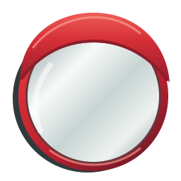

凸面镜实验室
导出作品
↗
实时画布
纯净凸面镜 · 3D
按压镜面
移动照片
旋转查看
＋
把生活装进镜子里
上传照片，或拍一张新的
已选中贴纸
−
150
＋
↶
0°
↷
删除
↶
撤回
↷
重做
上传照片后，拖动画面调整位置
清除彩绘
1
放照片
—
2
加贴纸
—
3
自由创作
—
4
保存喜欢
×
导出图片
导出方式
单镜效果 · 透明背景 PNG
完整画布 · 带背景 PNG
图片尺寸
标准 · 1080 × 1080
高清 · 2048 × 2048
生成图片
保存／分享
下载图片
手机：长按图片，选择“存储图像”或“保存图片”。